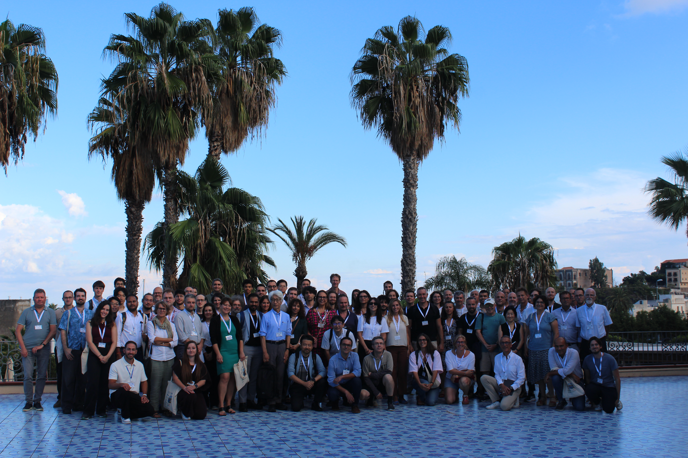
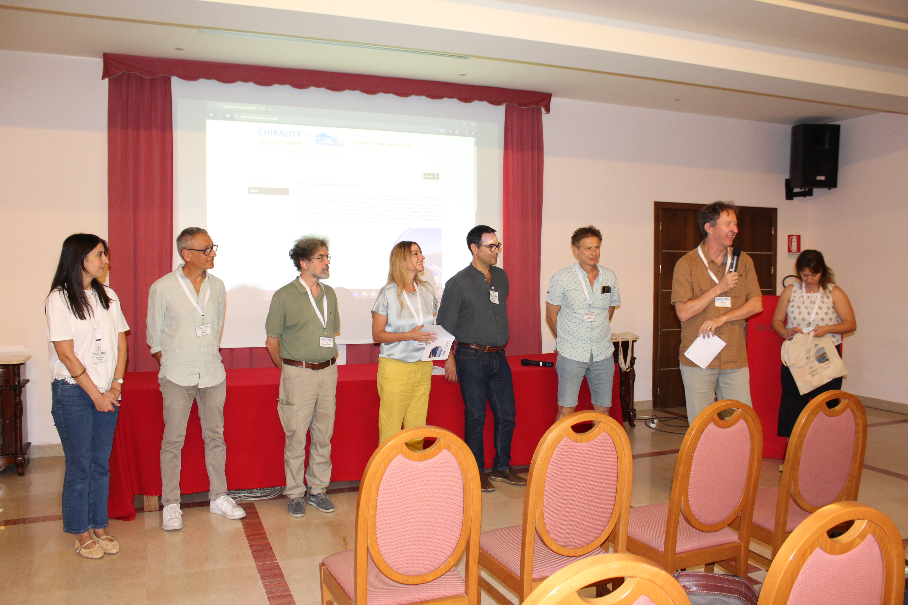
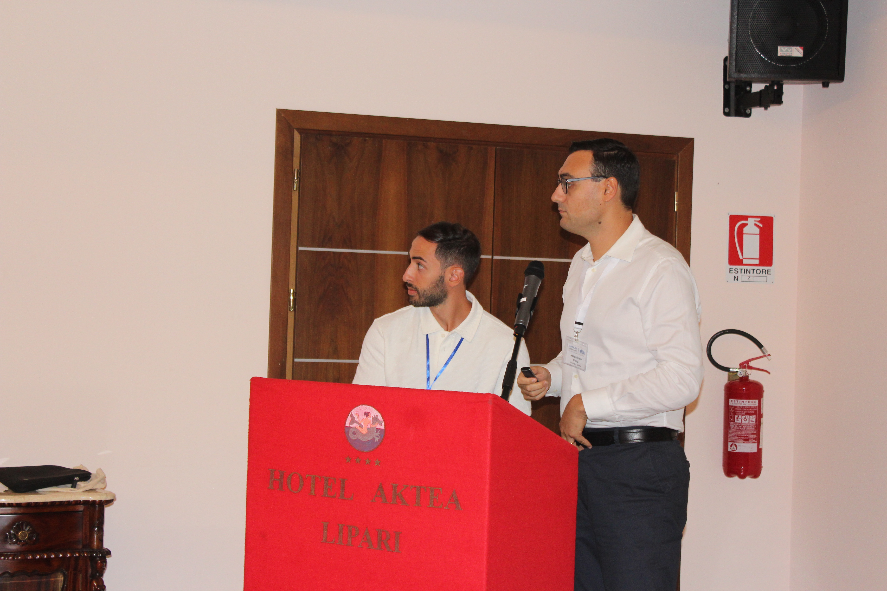
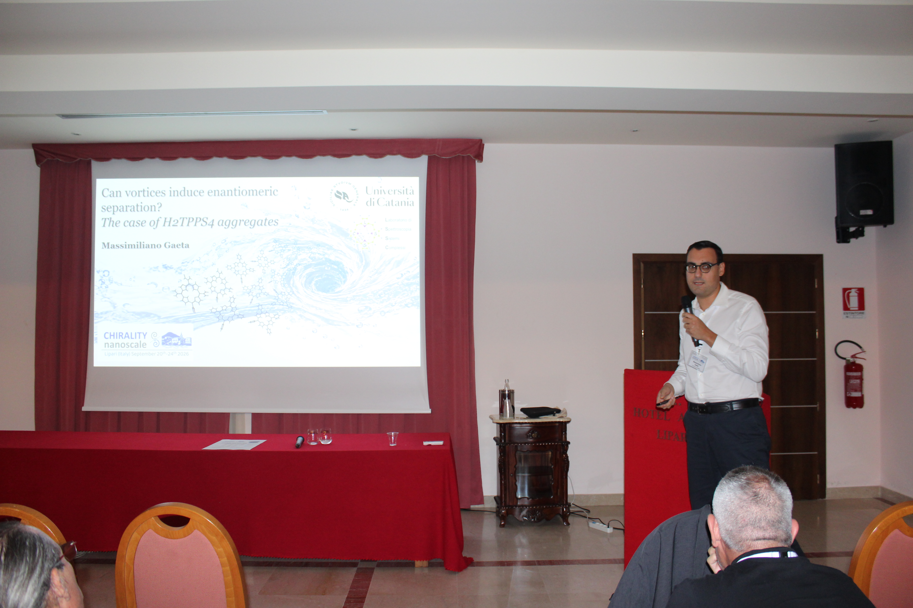

Laboratory of Spectroscopy of Complex Systems
We study how porphyrins and other molecules assemble into chiral architectures, films and nanosystems, and we use spectroscopy to investigate their structure and their interactions with biomolecules. Department of Chemical Sciences, University of Catania.
See our researchJoin the groupResearch
Chiral supramolecular assemblies
Porphyrin aggregates in water that induce, amplify and remember chirality, recognise amino acids, and form one-dimensional chiral structures with calixarenes.
Hybrid films and functional materials
Porphyrinoid–melanin and chiral melanin films, nanostructures and functionalised surfaces, with applications in the removal of dye pollutants from water and in antibacterial photodynamic action based on singlet oxygen generation.
Porphyrins as probes of biomolecules
Chiroptical spectroscopy and binding studies that provide information on non-canonical conformations of DNA (such as G-quadruplexes and Z-DNA) and on other biomolecules, including miRNAs and proteins.
People
 Alessandro D'UrsoPrincipal investigator, Associate Professor of General and Inorganic Chemistryadurso@unict.itORCID
Alessandro D'UrsoPrincipal investigator, Associate Professor of General and Inorganic Chemistryadurso@unict.itORCID Massimiliano Gaeta
Massimiliano Gaeta Tiziano Grillo
Tiziano Grillo Giorgio CampanellaMaster's thesis student
Giorgio CampanellaMaster's thesis student Federico AlecciBachelor's thesis student
Federico AlecciBachelor's thesis studentSelected publications
- Singlet oxygen generation in hybrid porphyrin/DOPA-melanin coatings. Journal of Porphyrins and Phthalocyanines 2026. DOI
- Spectroscopic investigation of the interaction between a spermine-functionalized porphyrin and TERRA G-quadruplexes. International Journal of Molecular Sciences 2026, 27, 3424. DOI
- Porphyrins as chiroptical conformational probes for biomolecules. Molecules 2025, 30, 1512. DOI
- Tuning hybrid porphyrin-melanin films via supramolecular approach. Journal of Porphyrins and Phthalocyanines 2025. DOI
- Towards 1D supramolecular chiral assemblies based on porphyrin–calixarene complexes. Nanoscale 2025, 17, 6530. DOI
- Self-assembled chiral film based on melanin polymers. Chirality 2024. DOI
- Hybrid porphyrin/DOPA-melanin film as self-assembled material and smart device for dye-pollutant removal in water. Chemical Engineering Journal 2022, 433, 133262. DOI
Full list on Google Scholar.
News
- Our group helped organise and participated in Chirality@TheNanoscale 2026, held in Lipari, Italy, on 20–24 September 2026.




Join us
We welcome students for Bachelor's and Master's theses, and we are open to collaborations. Write to us with a short CV and a few lines about what interests you.
Email the groupContact
Laboratory of Spectroscopy of Complex Systems (LSSC)
Department of Chemical Sciences, University of Catania
Viale Andrea Doria 6, 95125 Catania, Italy
adurso@unict.it
Phone: +39 095 7385071